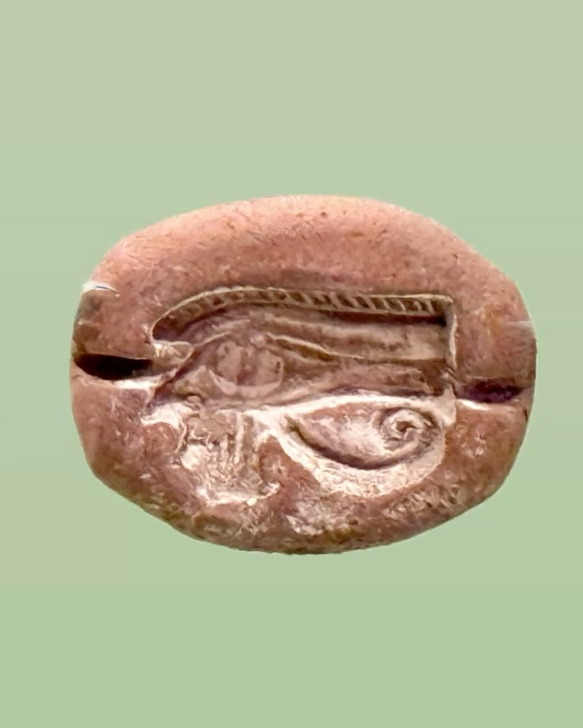

Что такое уджат
Уджат (егип. уджа) — «здравое», целое, исцелённое око бога Гора: знак защиты, исцеления, целостности и жертвы. Око рисовали с соколиной бровью, спиралью и вертикальной чертой — как с живого сокола. «Уджат» значит «здравый, целый, здоровый»: не раненый, а восстановленный глаз — и потому знак несёт силу целого: потерянное возвращено.
Миф об оке
В битве с Сетом Гор потерял глаз. Бог Тот, повелитель магии, восстановил его: силой хека око было исцелено и стало «здравым». Исцелённое око Гора — символ целого, возвращённого после утраты: из раны рождается целое, и сила исцеления запечатлена в самой форме знака.
Магическое применение
Уджат рисовали на носах кораблей, домах, амулетах — как защиту от сглаза. В медицинских заклинаниях жрец рисовал уджат на теле больного и произносил: «Как глаз Гора был исцелён, так и тело твоё исцеляется». Чтобы амулет «работал», его нужно было «оживить»: жрец касался его инструментом и говорил: «Ты жив, ты открыт, ты видишь».
Умершего уджат охранял на саркофаге: «глаза» гробницы — на боках, чтобы мёртвой «видел» подношения (см. Саркофаги).
Дробные части ока
Части уджата — бровь, глаз, спираль, черта — читаются как дроби: 1/2, 1/4, 1/8, 1/16, 1/32 и 1/64. Вместе они дают 63/64 — именно эти дроби были единицами измерения зерна (в хекате) и лекарств. Считалось, что каждая часть несёт свою магическую силу, а самая маленькая, 1/64, называлась «даром Ра».